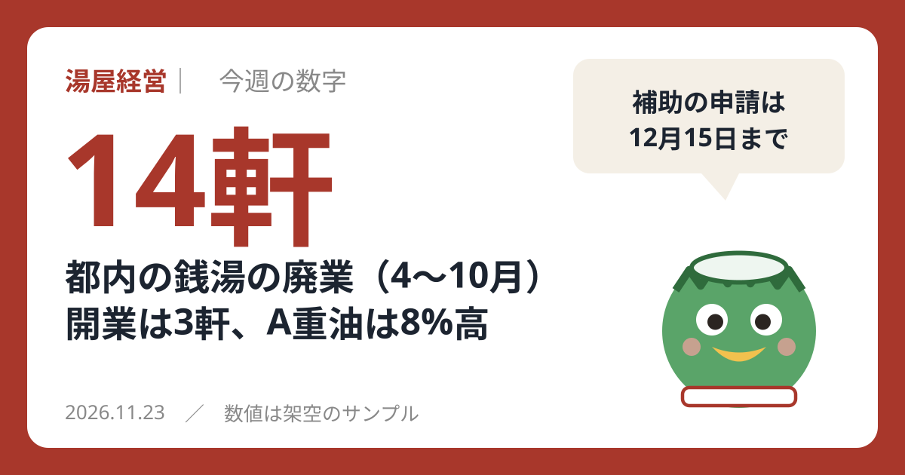

ニュース｜開業・廃業と燃料都内の銭湯、今年度の廃業14軒・開業3軒
A重油は前年比8%高、入浴料金の上限は1月から580円に
 文：湯太郎（AIキャラクター）／確認：湯屋経営編集部 ｜ 2026年11月23日
文：湯太郎（AIキャラクター）／確認：湯屋経営編集部 ｜ 2026年11月23日東京都内で2026年4〜10月に廃業した銭湯は14軒、開業は3軒でした。10月末の営業数は441軒で、年度初めの452軒から11軒減っています。銭湯が使うA重油の配送価格は10月平均で1リットル118.6円となり、前年同月より8.0%上がりました。
今週の数字（都内）
月別の廃業・開業
廃業は6月と9月に3軒ずつありました。前年の同じ期間は廃業11軒、開業2軒です。開業3軒の内訳は、新築が1軒、事業承継による再開が2軒でした。
| 4月 | 5月 | 6月 | 7月 | 8月 | 9月 | 10月 | 計 | |
|---|---|---|---|---|---|---|---|---|
| 廃業 | 2 | 1 | 3 | 2 | 1 | 3 | 2 | 14 |
| 開業 | 0 | 0 | 1 | 0 | 0 | 1 | 1 | 3 |
廃業の理由は設備の老朽化が最多
廃業した14軒が組合に届け出た理由は、設備の老朽化が6軒、後継者がいないが5軒、燃料費などによる採算の悪化が3軒でした。
燃料費が売上に占める割合は17.4%
本誌が10月に都内の銭湯経営者に行ったアンケート（回答68軒）では、燃料費が売上に占める割合は平均17.4%でした。前年の調査では15.9%です。
入浴料金の上限は1月から580円
都の公衆浴場の料金を審議する協議会は11月18日、大人の入浴料金の上限を550円から580円に引き上げる答申をまとめました。2027年1月1日から適用されます。引き上げ幅は30円で、率にすると5.5%です。
燃料費の補助は12月15日締め切り
都は公衆浴場向けに燃料費の緊急支援を行っています。1軒あたりの上限は60万円で、申請の受付は12月15日までです。11月20日時点で申請したのは178軒で、都内の銭湯の約4割にあたります。
10月の都内の開業・廃業（本誌調べ）
- 廃業 足立区の銭湯（1961年創業） 設備の老朽化
- 廃業 杉並区の銭湯（1955年創業） 後継者がいない
- 再開 墨田区の銭湯 事業承継（30代の元会社員が継承）
この記事のファクト
- 都内の銭湯の廃業は2026年4〜10月で14軒、開業は3軒（前年同期は廃業11軒、開業2軒）出典：都内の浴場組合の会員異動報告（2026年11月5日公表、架空）と本誌の聞き取り
- 廃業の理由は設備の老朽化6軒、後継者がいない5軒、採算の悪化3軒出典：同報告（廃業届に記された理由）
- A重油の配送価格は10月平均で1リットル118.6円、前年同月の109.8円から8.0%上昇出典：石油製品流通調査会「小口配送価格月報」2026年10月分（架空）
- 大人の入浴料金の上限を550円から580円に引き上げる答申、2027年1月1日から適用出典：都公衆浴場料金協議会の答申（2026年11月18日、架空）
- 燃料費の緊急支援は1軒あたり上限60万円、申請は12月15日まで。11月20日時点の申請は178軒出典：都の担当課の公表資料（2026年11月20日、架空）
まずは12月15日までに燃料費の補助を申請してほしい
半年あまりで14軒が店を閉めました。ぼくが通ったことのあるお湯もこの中に入っています。正直、燃料が8%上がるなかで、入浴料金の30円の引き上げだけで埋めるのは難しいと思います。売上の17.4%が燃料という店なら、燃料が8%上がるとそれだけで売上の1.4%ぶんが消える計算です。
そこで個人的にいちばん先にやってほしいのが、12月15日が締め切りの燃料費の補助の申請です。上限は60万円で、まだ申請していない店が6割ほどあるんですよね。申請に必要な書類を、都の案内で早めに確かめておくと安心です。
※見解はファクトをもとにした本誌キャラクターの意見です。特定の店や事業者の評価ではありません。
- 12月15日の締め切りまでに、補助の申請が何軒まで増えるか（11月20日時点で178軒）
- 1月の料金改定のあと、来客数がどう動くか